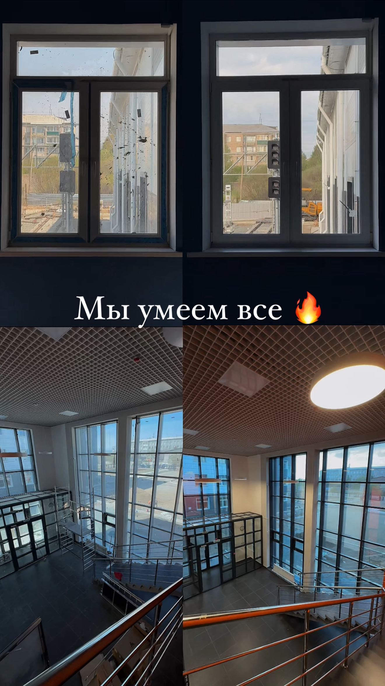

Технология уборки
Инвентарь, химия и порядок действий на объекте.
WHITE GLOVE · ЧИТА / ONLINE
За 7 дней разберёшься в технологии уборки, работе с клиентами и запуске компании. Затем закрепишь знания на реальном объекте.
7 дней обучения · 2 формата · практика с Марией
НЕ ТОЛЬКО ТЕОРИЯ
Разберёшься, как устроена клининговая компания — от чистой поверхности до команды и документов.
Инвентарь, химия и порядок действий на объекте.
Заявки, документы, подготовка объекта и процессы.
Подбор команды и первые шаги к своему делу.

СМОТРЕТЬ РАБОТУ КОМАНДЫПРАКТИКА НАСТОЯЩЕЙ КОМАНДЫ
White Glove убирает школы, окна, фасады и коммерческие пространства. На конкретных проектах легче понять, как планируют работу и распределяют задачи.
Посмотреть проект в InstagramОТЗЫВ УЧЕНИЦЫ
Всё очень подробно, лаконично и понятным языком.
ЛИЧНЫЙ ОПЫТ УЧЕНИЦЫ
10 объектов
за 10 дней и первые коммерческие заявки
Это история одной ученицы, а не обещание такого же результата.
Больше отзывовВЫБЕРИ СВОЙ ТЕМП
В обоих форматах — теория уборки и химчистки, оборудование, химия, работа с клиентами и запуск дела. Выбирай объём практики и поддержки.
Программа и личная связь
Все уроки курса, один месяц обратной связи и одна практика на объекте с Марией.
Всё для старта
Два месяца наставничества и две практики. Пылесос, парогенератор и необходимую химию закупаем за свой счёт.
Стоимость, расписание и наличие мест уточняются у Марии в Instagram.
НАСТАВНИК ПО КЛИНИНГУ
Основатель White Glove. Покажет, как устроена работа компании, и поможет выбрать подходящий формат обучения.
Познакомиться в InstagramНет. Можно начать с нуля и выбрать формат под свой опыт и цель.
Программа общая. В индивидуальном формате — месяц обратной связи и одна практика. В VIP — два месяца наставничества, две практики, оборудование и химия за наш счёт.
Напиши Марии — она расскажет о стоимости, расписании и ближайших местах.
БЕЗ ОБЯЗАТЕЛЬСТВ
Уточни программу, цену и ближайший набор прямо у Марии.
Написать Марии в Instagram